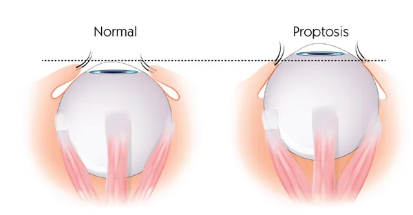
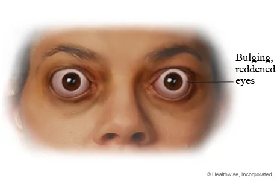
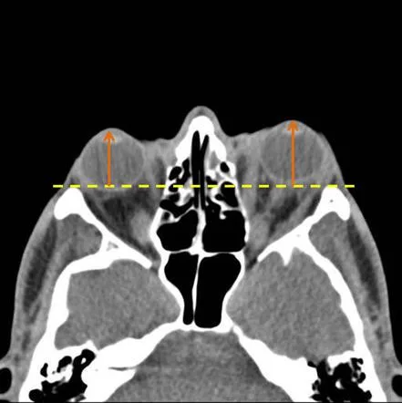

Expanded Nursing Uganda Explanation
Exophthalmos / Proptosis should be understood beyond a short definition. Link the concept to patient history, focused assessment, common risks, nursing priorities, documentation and evaluation of outcomes.
Contents, 13 sections (tap to expand)
01 Proptosis
Proptosis of the eye, also known as exophthalmos, is a condition where one or both eyes bulge or protrude from their normal position in the eye sockets.
It can be caused by various factors affecting the structures around the eyes.
02 Causes and Risk Factors:
- Thyroid Eye Disease: One of the common causes of proptosis is thyroid eye disease, also known as Graves’ ophthalmopathy. It occurs when the immune system mistakenly attacks the tissues around the eyes, causing inflammation and pushing the eyes forward.
- Orbital Cellulitis and Infections: Infections in the eye socket, known as orbital cellulitis, can lead to swelling and proptosis.
- Orbital Tumors: Benign or malignant tumors in the eye socket can cause the eyes to bulge out. These growths need to be evaluated and treated promptly.
- Trauma or Injury : Severe injuries to the eye or orbit can displace the eye from its normal position, resulting in proptosis.
- Allergic Reactions : Severe allergic reactions in and around the eyes can cause swelling and push the eyes forward.
Risk Factors:
- Thyroid disorders, such as hyperthyroidism (overactive thyroid)
- Previous history of eye injuries or surgeries
- Family history of thyroid eye disease or other eye conditions
- Certain infections that can affect the eye socket and surrounding tissues
03 Classifications of Proptosis:
Proptosis, also known as exophthalmos, can be classified based on different criteria
Based on Onset: a. Acute Proptosis : Sudden onset of bulging eyes, often associated with infections, trauma, or inflammatory conditions. b. Chronic Proptosis: Gradual and persistent eye protrusion, frequently linked to conditions like thyroid eye disease or slow-growing tumors.
Based on Cause: a. Thyroid-Related Proptosis: Caused by thyroid eye disease, usually associated with hyperthyroidism (Graves’ ophthalmopathy). b. I nflammatory Proptosis : Resulting from infections or autoimmune disorders that lead to eye inflammation and swelling. c. Neoplastic Proptosis : Caused by benign or malignant tumors within the orbit. d. Traumatic Proptosis : Arising from injuries or fractures involving the eye and surrounding structures. e. Allergic Proptosis: Due to severe allergic reactions affecting the eye and eye socket.
Based on Uni or Bilaterality: a. Unilateral Proptosis : Affecting only one eye, often seen in localized conditions or trauma to one eye. b. Bilateral Proptosis : Involving both eyes, commonly observed in systemic or thyroid-related causes.
Based on Severity: a. Mild Proptosis : Minimal eye protrusion with no significant impact on vision or eye function. b. Moderate Proptosis : Noticeable eye bulging with mild-to-moderate impact on eye movement and visual acuity. c. Severe Proptosis: Pronounced eye protrusion with significant visual impairment, restricted eye movement, and potential complications.
Eye Structure: Anatomy of the eye
It consists of several important parts:
- Cornea : The clear front part that allows light to enter the eye.
- Iris : The colored part of the eye that controls the size of the pupil.
- Pupil : The black center that regulates the amount of light entering the eye.
- Lens : Located behind the iris, it focuses light onto the retina.
- Retina : The back of the eye where images are formed and sent to the brain through the optic nerve.
- Optic Nerve : Carries visual information from the retina to the brain for processing.
Orbit and Eye Socket:
The orbit, also called the eye socket, is a bony cavity in the skull that houses the eye and its surrounding structures. The orbit is made up of several bones, including the frontal bone, maxilla, zygomatic bone, and others. It not only protects the eye but also provides support and attachment points for the eye muscles.
Within the orbit, there are important soft tissues that include:
- Extraocular Muscles : These muscles control the movement of the eye in different directions.
- Fat Tissue : Provides cushioning and support for the eye within the orbit.
- Blood Vessels and Nerves : Supply nutrients and transmit sensory information to and from the eye.
04 Pathophysiology
Proptosis occurs when there is an abnormal increase in the volume of tissue within the orbit, causing the eye to bulge forward. This can happen due to swelling, growths, or displacement of structures within the eye socket. As a result of proptosis, the eye is pushed out of its normal position, which can lead to several effects:
- Visible Bulging : The affected eye(s) may appear more prominent than the other eye due to the forward displacement.
- Limited Eye Movement: Proptosis can hinder the normal movement of the eye because of the increased pressure within the confined space of the orbit.
- Exposure of the Eye Surface: The bulging eye may have difficulty closing fully, leading to problems with lubrication and dryness.
- Vision Problems : Proptosis can impact the alignment of the eyes, leading to double vision (diplopia) or blurred vision.
05 Signs and Symptoms of Proptosis
A. Bulging or Protruding Eye(s): One of the most noticeable signs of proptosis is when one or both eyes appear to bulge or protrude from their normal position within the eye sockets. The affected eye(s) may look larger and more prominent than usual, which can be concerning for the person experiencing this symptom.
B. Redness and Swelling: Proptosis often leads to redness and swelling around the affected eye(s) and the surrounding tissues. The increased pressure within the eye socket can cause inflammation, making the eye area appear puffy and irritated.
C. Vision Changes and Diplopia (Double Vision): Changes in vision are common with proptosis. The displaced position of the eye can disrupt the normal alignment, leading to double vision (diplopia). This occurs when the images seen by each eye do not merge properly, resulting in two overlapping images instead of a single clear image.
D. Pain or Discomfort : Patients with proptosis may experience varying degrees of pain or discomfort around the affected eye(s) and the surrounding area. The pressure and stretching of tissues within the eye socket can cause pain, which may worsen with eye movement or touch.
E. Eyelid Abnormalities : Proptosis can affect the position and function of the eyelids. Some patients may experience difficulty fully closing the affected eye, leading to incomplete blinking and potential corneal exposure, which can cause dryness and irritation.
F. Photophobia (Light Sensitivity) : Increased protrusion of the eye can make it more sensitive to light, leading to discomfort or pain when exposed to bright lights.
G. Watery Eyes: Proptosis can disrupt the normal tear flow and drainage, resulting in excessive tearing (epiphora).
H. Displacement of the Eye Muscles : The abnormal position of the eye may cause the extraocular muscles (responsible for eye movement) to become misaligned, leading to limited or abnormal eye movements.
I. Changes in Eye Appearance: Aside from bulging, proptosis may cause changes in the appearance of the eye(s), such as a widened palpebral fissure (the opening between the upper and lower eyelids) or changes in the position of the iris.
J. Pressure Sensation : Some individuals with proptosis may describe a feeling of pressure or heaviness around the eyes due to the increased tissue volume within the eye socket.
06 Diagnosis of Proptosis
Clinical Examination by Healthcare Professionals: The first step in diagnosing proptosis involves a thorough clinical examination by healthcare professionals, such as ophthalmologists or eye specialists. During the examination, the following assessments may be performed:
- Visual Acuity Test : To assess how well the patient can see at various distances using an eye chart.
- Eye Movement Examination : To check for any limitations or abnormalities in the movement of the affected eye(s).
- Pupil Examination : To evaluate the size and reaction of the pupils to light.
- Eye Pressure Measurement: To check for increased intraocular pressure, which may be associated with certain eye conditions.
- Slit-Lamp Examination : A specialized microscope used to examine the front structures of the eye, including the cornea, iris, and lens.
- Fundoscopy : To visualize the back of the eye (retina and optic nerve) using an ophthalmoscope.
Imaging Studies (MRI, CT Scan) for Accurate Assessment : Imaging studies are essential to get a detailed view of the eye and the structures within the orbit. The two most common imaging modalities used for proptosis diagnosis are:
- Magnetic Resonance Imaging (MRI): This non-invasive technique uses powerful magnets and radio waves to create detailed images of the eye, orbit, and surrounding soft tissues. MRI helps identify any abnormal growths, inflammation, or changes in the eye and orbital structures.
- Computed Tomography (CT Scan) : CT scans provide cross-sectional images of the eye and orbit, offering precise information about the bony structures and any abnormalities present. It helps in identifying fractures, tumors, or other conditions affecting the eye socket.
07 Differential Diagnosis
- Thyroid Eye Disease (Graves’ Ophthalmopathy): This autoimmune condition is one of the common causes of proptosis and may be associated with other signs of hyperthyroidism.
- Orbital Cellulitis : An infection of the tissues around the eye, causing redness, swelling, and pain.
- Orbital Tumors : Benign or malignant growths that can push the eye forward.
- Allergic Reactions : Severe allergies can cause eye swelling and redness.
- Traumatic Eye Injury : Severe eye injuries may lead to eye displacement and proptosis.
08 Management of Proptosis
Medical Management:
- Treating Underlying Conditions (e.g., Thyroid Disorders): If proptosis is caused by an underlying condition like thyroid eye disease, the primary focus of treatment is managing the underlying disorder. For instance, in Graves’ ophthalmopathy, controlling the overactive thyroid with medications, radioactive iodine, or surgery may help stabilize or improve eye symptoms.
- Corticosteroids and Immunosuppressive Therapy : In certain cases of proptosis associated with inflammation or autoimmune conditions, corticosteroids may be prescribed. These anti-inflammatory medications help reduce swelling and inflammation around the eyes. In more severe cases, immunosuppressive therapy may be used to modulate the immune response and manage the underlying cause.
Surgical Interventions: ( Pre and Post operative care )
- Orbital Decompression Surgery : Orbital decompression is a surgical procedure performed to alleviate pressure in the eye socket by creating additional space. It involves removing or reshaping parts of the bony orbit to allow the displaced eye to move back to a more normal position. This surgery is commonly used for patients with proptosis due to thyroid eye disease or other conditions causing compression of the optic nerve.
- Orbital Tumor Removal: If proptosis is caused by benign or malignant tumors within the orbit, surgical removal may be necessary. The goal is to excise the tumor while preserving the surrounding eye structures and restoring a more natural eye position.
- Eye Realignment Surgery: In cases of proptosis resulting from muscle imbalances or nerve problems, eye realignment surgery may be recommended. This procedure aims to reposition the affected eye(s) to improve alignment and reduce double vision.
09 Nursing Care for Patients with Proptosis
Patient Education:
- Understanding the Diagnosis and Treatment Plan: Nurses play a vital role in educating patients about their proptosis diagnosis, explaining the underlying cause, and discussing the treatment options available. They should ensure that patients comprehend the information, addressing any questions or concerns they may have.
- Eye Care and Hygiene: Nurses should provide guidance on proper eye care and hygiene practices to prevent complications like dry eyes and corneal exposure. This includes instructing patients on how to use lubricating eye drops, avoiding eye rubbing, and maintaining a clean eye area to reduce the risk of infections.
Monitoring and Assessment:
- Visual Acuity Checks : Regular visual acuity assessments should be performed to monitor changes in the patient’s vision. Record and report any abnomarities in visual acuity to the healthcare team promptly.
- Assessing for Complications : Monitoring for potential complications related to proptosis, such as signs of optic nerve compression, corneal exposure, and eye infections. Regular assessments can help detect these issues early, allowing for timely intervention.
Emotional Support for Patients and Families:
- Addressing Psychological Impact : Having proptosis can significantly impact a patient’s emotional well-being and self-esteem. Nurses should provide empathetic support, actively listen to patients’ concerns, and offer reassurance to help alleviate anxiety or distress related to the condition.
- Encouraging Coping Mechanisms : Nurses can recommend stress-reducing techniques and coping mechanisms to help patients manage their emotions and cope with the challenges of living with proptosis. Encouraging patients to engage in hobbies, relaxation techniques, or support groups can be beneficial.
- Positioning the Patient After Surgery: Following orbital surgeries, nurses will help position the patient to minimize swelling and promote comfort. Elevating the head of the bed and keeping the patient’s head elevated can help reduce post-operative swelling and pressure around the eyes.
- Lubricating Eye Drops: For patients experiencing dry eye symptoms due to incomplete eye closure, artificial tears or lubricating eye drops can help keep the eyes moist and reduce discomfort.
- Eye Protection: Patients with proptosis should be advised to wear appropriate eye protection, such as safety glasses or goggles, to safeguard the eyes from potential injury.
- Eye Patching: In cases where there is significant corneal exposure, eye patches may be used to protect the cornea and promote healing.
- Vision Therapy: For patients with residual double vision, vision therapy exercises may be prescribed to help improve eye muscle coordination and reduce the impact of diplopia.
- Psychological Support : Dealing with proptosis and its effects on appearance and vision can be emotionally challenging for patients. Providing psychological support and counseling can help patients cope with the condition and boost self-esteem.
10 Nursing Uganda Clinical Lens
Use Exophthalmos / Proptosis as a practical nursing topic, not only a memorized definition. Prioritize airway, breathing, circulation, pain, asepsis, wound healing and early complication detection.
- What to understand first: define exophthalmos / proptosis, identify the normal or expected pattern, then explain what changes when the patient is unwell.
- Why it matters in care: the nurse must recognize risk early, explain findings clearly, document accurately and know when to escalate.
- How to revise it: connect each point to assessment, nursing diagnosis or care problem, intervention, rationale and evaluation.
11 Assessment Guide
- Vital signs, pain, bleeding, perfusion, level of consciousness and injury pattern.
- Wound appearance, drainage, odour, swelling, temperature and surrounding skin.
- Fluid balance, mobility, nutrition, surgical site risk and ordered investigations.
12 Nursing Priorities, Rationales and Outcomes
- Stabilize urgent problems first, then prepare for investigations or theatre care.
- Maintain aseptic technique, pain control, wound care and documentation.
- Prevent shock, infection, pressure injury, deep vein thrombosis and delayed healing.
The rationale for these priorities is patient safety: nursing actions should prevent deterioration, reduce discomfort, support recovery and create clear evidence for the next caregiver.
- Expected outcome: The patient remains stable, wound healing progresses, pain is controlled and complications are recognized early.
13 Patient Teaching and Revision Check
- Explain exophthalmos / proptosis in simple language the patient or caregiver can repeat back.
- Teach warning signs, medicine or follow-up instructions, hygiene or lifestyle points where relevant.
- For exams, prepare a short answer using: definition, causes or risk factors, signs, assessment, management, complications and prevention.
- For ward practice, document baseline findings, actions taken, patient response and the plan for review.
Illustrations and Diagrams (7)





Related Video Lectures
Watch nursing lecture videos on YouTube for this topic. Opens in a new tab.
Watch on YouTubeExternal link: YouTube may use its own cookies and terms. Nursing Uganda is not affiliated with YouTube.